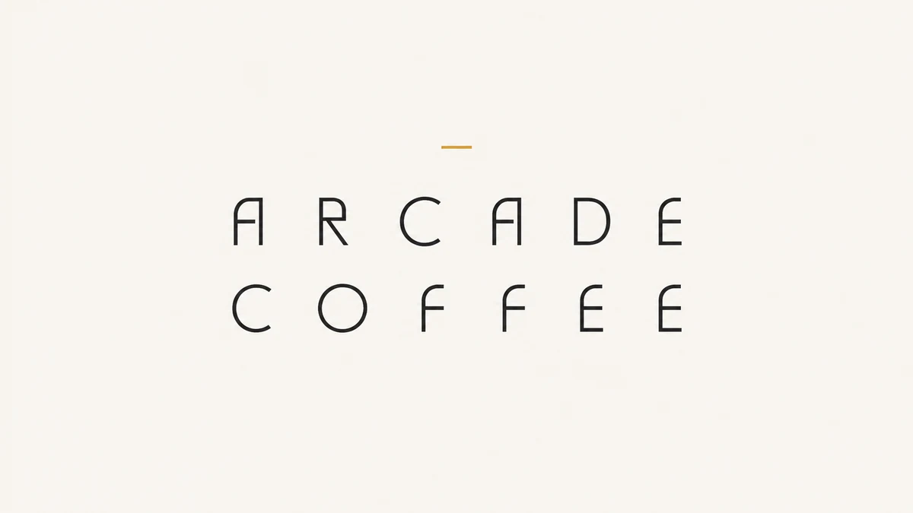
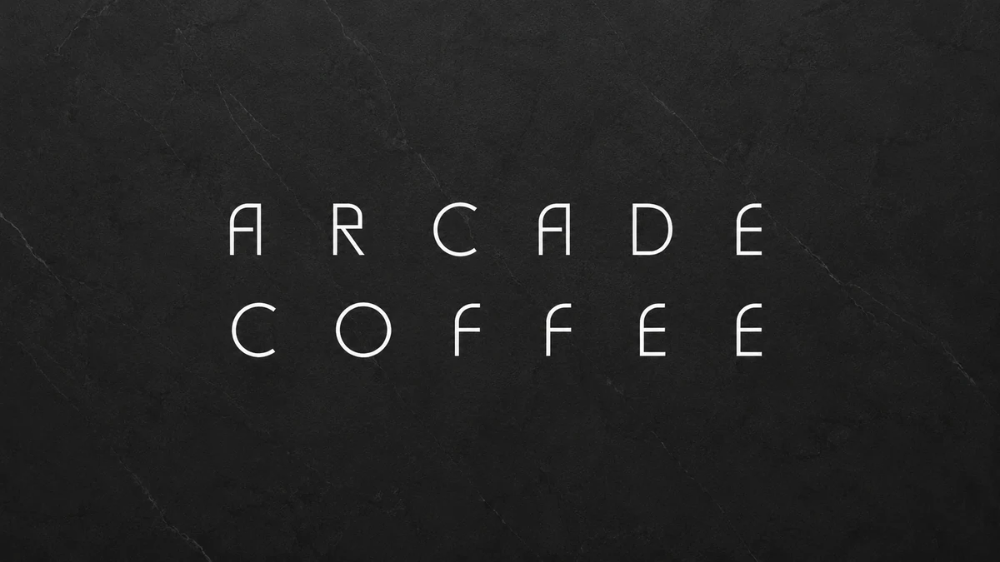
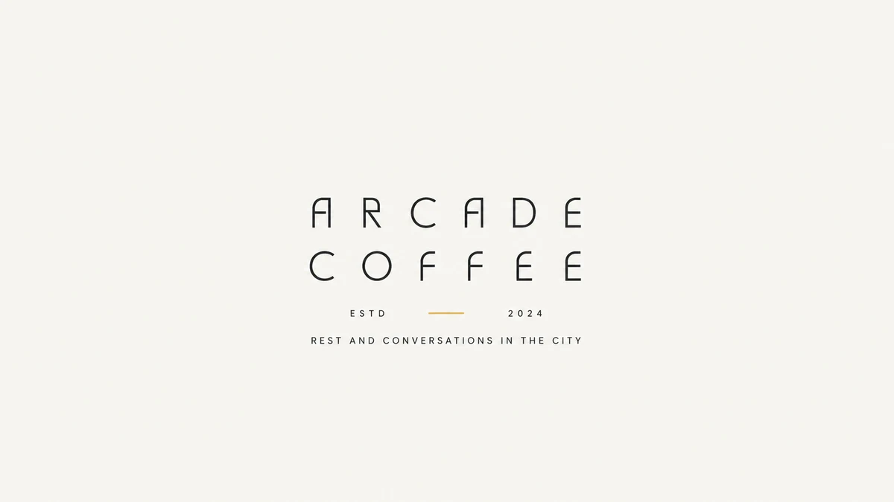
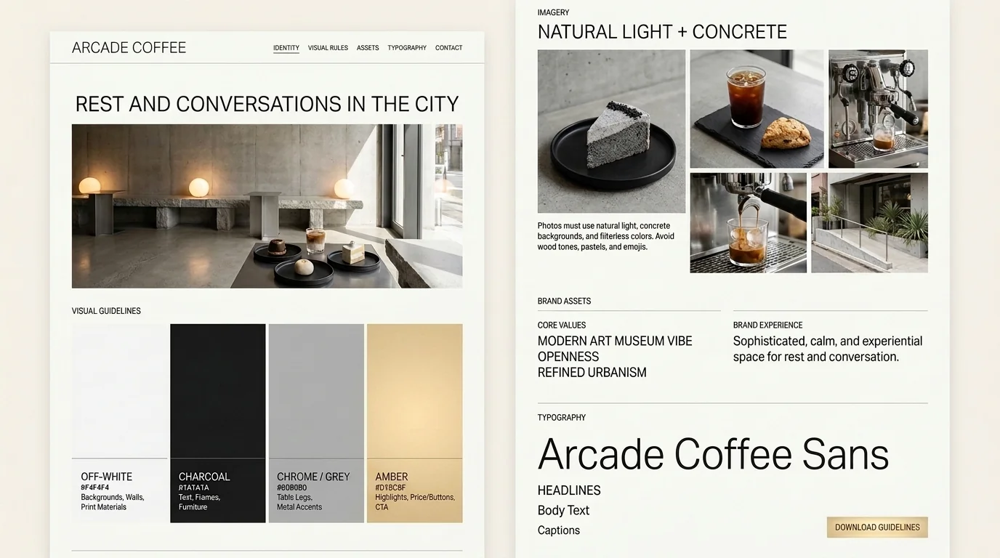

브랜드 기준 — 비용 0원으로 정하는 것들
새 로고나 광고를 만드는 문서가 아닙니다. 이미 가지고 있는 것들(이름·건물·문장·공간 인상)을 하나의 기준으로 묶어서, 어느 채널에서든 같은 가게로 보이게 하는 규칙입니다. 여기 있는 것은 전부 돈이 들지 않습니다.
브랜드 한 문장
새로 짓지 않았습니다 — 이미 쓰던 문장을 기준으로 승격
도심 속 휴식과 대화들
인스타 소개문에 이미 쓰고 있던 문장입니다. 손님 데이터와 맞아서 그대로 갑니다 — 방문 목적(대화·모임), 주 고객(20~30대 88%), 저녁 2차 피크(18~21시)와 전부 일치합니다.
| 구분 | 기준 |
|---|---|
| 우리는 | 도심(봉명동 술집거리 한복판)에서 휴식과 대화를 파는 카페 |
| 손님에게 주는 것 | 이야기할 수 있는 자리 · 늦은 시간 · 술 대신 마실 것 |
| 아닌 것 | 빵집 · 브런치 카페 · 공부 카페 · 프리미엄 가격 경쟁 |
이미 가진 브랜드 자산
전부 확인된 것 — 지키기만 하면 됩니다
| 자산 | 내용 | 어디서 확인됐나 |
|---|---|---|
| 이름·로고 | ARCADE COFFEE 원형 로고 (오프화이트 바탕 · 가는 대문자) | 인스타 프로필 · 간판 |
| 태그라인 | "도심 속 휴식과 대화들" | 인스타 소개문 (게시물 122개 톤 일관) |
| 건물 | 콘크리트 오프화이트 · 차콜 프레임 · 잔디 마당 · 전구빛 | 실물 · 손님 사진 |
| 공간 인상 | "현대미술관처럼" · "개방감" | 손님 목소리(VOC) 분석 강점 상위 |
| 메뉴 이름 유산 | Deep Black · Strawberry Field · Royal Chamomile — 영문 시리즈 감성 | 기존 메뉴판 |
시각 규칙
디자인 시트가 기준입니다 — 화면·인쇄물·매장이 한 톤
로고
세 가지를 씁니다. 바탕색에 따라 고르면 되고, 이 밖의 변형은 만들지 않습니다. 누르면 크게 볼 수 있습니다.



로고 주변에 글자 높이만큼의 여백을 둡니다. 다른 요소를 붙이지 않습니다.
색은 차콜 또는 흰색 두 가지뿐입니다. 앰버는 로고 안의 짧은 선에만 씁니다.
기울이거나 늘리거나 그림자를 넣지 않습니다. 태그라인 문구도 바꾸지 않습니다.
브랜드 시트

hub/assets/brand/brand-sheet-20260731.webp시트에 적힌 색값 그대로입니다. 메뉴판·안내물·화면을 만들 때 이 네 개 밖의 색을 쓰지 않습니다.
| 시트 항목 | 내용 |
|---|---|
| 한 문장 | REST AND CONVERSATIONS IN THE CITY — 도심 속 휴식과 대화들 (기존 인스타 소개문과 같은 문장) |
| 핵심 가치 | 현대미술관 같은 인상 · 개방감 · 절제된 도시 감성 (MODERN ART MUSEUM VIBE · OPENNESS · REFINED URBANISM) |
| 공간 경험 | 차분하고 정제된, 쉬면서 이야기하는 공간 |
| 사진 규칙 | 자연광 + 콘크리트 배경 + 필터 없는 색. 우드 톤·파스텔·이모지는 쓰지 않습니다 |
| 글자 | 기하학적 산세리프 한 종류로 제목·본문·설명을 다 씁니다 (Arcade Coffee Sans) |
- 조명 색온도는 2700K(전구색 — 따뜻한 노란빛)로 통일합니다. 인테리어 확정 사양과 같은 값이고, 매장 사진을 찍을 때도 이 빛에서 찍는 것이 기준입니다. 기존 조명이 다른 색이면 램프를 교체합니다
- 메뉴판·테이블텐트·소식 이미지 전부 위 4색 안에서
- 음료 위 가니시(장식)는 4색 규칙의 예외입니다. 식용 꽃·허브·과일 껍질처럼 잔 위에 올리는 것은 색이 달라도 됩니다 — 장식은 고급스러움을 만드는 요소이고, 잔 안의 음료와 공간의 색이 규칙을 지키면 톤은 유지됩니다. 다만 사진에 올린 장식은 실제로도 올립니다. 사진과 실물이 다르면 "사진과 다르다"가 리뷰에 남습니다
- 이모지는 브랜드가 나가는 모든 글(소식·답글·메뉴판)에서 쓰지 않습니다
- 가구는 차콜입니다. 시트의 차콜 항목에 "가구"가 들어 있습니다. 오프화이트는 벽·바닥·인쇄물 바탕 색이지 가구 색이 아닙니다 — 테이블 상판도 의자도 검정·차콜로 통일하고, 다리·금속만 크롬입니다. 바닥과 벽이 이미 밝은 콘크리트라, 가구가 어두워야 형태가 또렷해지고 미술관 인상이 납니다
- 우드톤 금지는 사진에만 걸리는 규칙이 아닙니다. 지금 1층의 원목 테이블·우드 좌판 의자·흰 상판 테이블·흰 의자는 전부 교체 대상입니다(3-2 조달 0장). 1층 테이블은 원형 2인 + 정사각 4인 두 종류만 씁니다
말투 규칙
답글 톤가이드와 같은 계열 — 담백하게, 사실을
이름 짓기 규칙
메뉴·행사 이름에 적용
- 네이버 등록명은 한글 검색어를 앞에 — "아케이드 블랙 아인슈페너 (흑임자)" 형식. 영문 단독 금지 (검색 유입 0이 됩니다)
- 영문 시리즈 감성(Deep Black 계보)은 메뉴판 디자인에서 살리고, 등록명에서는 검색어가 우선
- 유행어를 이름에 넣지 않습니다 — 유행이 꺼지면 이름이 같이 낡습니다
- 지역 재료를 쓰면 산지를 이름에 넣습니다 — "공주 알밤", "논산 딸기"
지금 하지 않는 것 (돈 드는 것)
방향만 정해두고 집행은 보류
| 항목 | 보류 이유 | 다시 볼 시점 |
|---|---|---|
| 로고 리디자인·간판 교체 | 현 로고가 방향과 이미 일치. 교체 실익 없음 | — |
| 굿즈(컵·스티커 등) | 재오픈 안착이 먼저 | 오픈 후 8주 지표 확인 뒤 |
| 유료 광고·협찬 | 마케팅 페이지 결정과 동일 — 품질·공간 먼저 | 오픈 후 4주 측정 뒤 |
| 멤버십·적립 제도 | 재방문율 데이터(POS)가 없어 설계 불가 | POS 데이터 확보 뒤 |
AI 분석브랜드 방향을 보고 드리는 참고 의견
작은 매장의 브랜딩은 새 것을 만드는 일이 아니라 같은 것을 반복하는 일입니다. 이 문서의 규칙들이 힘을 갖는 순간은 석 달 뒤에도 메뉴판·답글·사진이 같은 톤일 때입니다. 반대로 한 번이라도 "이번만 예외"가 쌓이면 규칙은 없던 것이 됩니다.
"도심 속 휴식과 대화들"을 태그라인으로 승격한 것은 좋은 선택입니다. 새 문장을 지었다면 정착에 1년이 걸렸을 텐데, 이미 122개 게시물이 그 톤으로 쌓여 있어서 출발점이 0이 아닙니다.
주의 하나 — 유행(크런치 쿠키류)이 다시 커 보일 때가 올 겁니다. 그때 이 문서의 "유행어를 이름에 넣지 않는다" 한 줄이 브랜드를 지킵니다. 유행은 재료로만 쓰고 이름은 우리 것으로 — 이 원칙만 지키면 됩니다.
이 의견은 마케팅·PM 분석 틀에 이 프로젝트의 실측 데이터를 넣어 나온 참고 의견입니다. 따르셔도 되고 안 따르셔도 됩니다 — 판단은 대표님들 몫입니다.